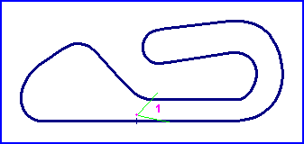
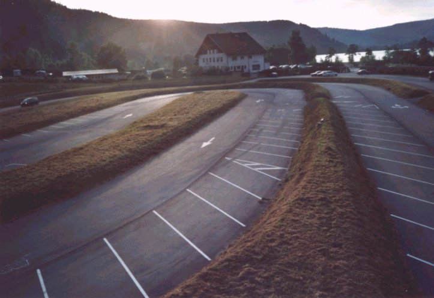
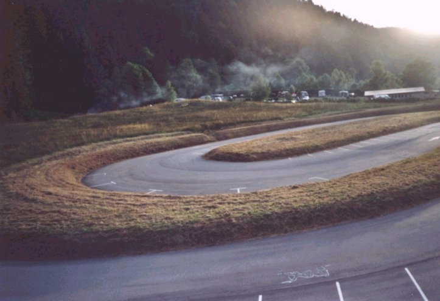
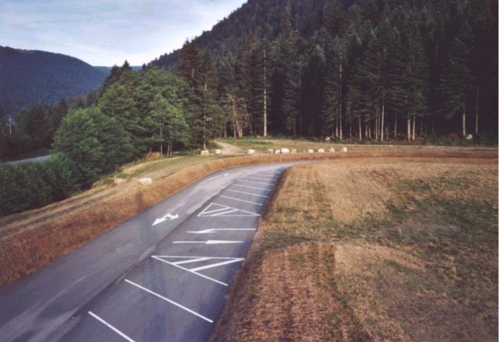
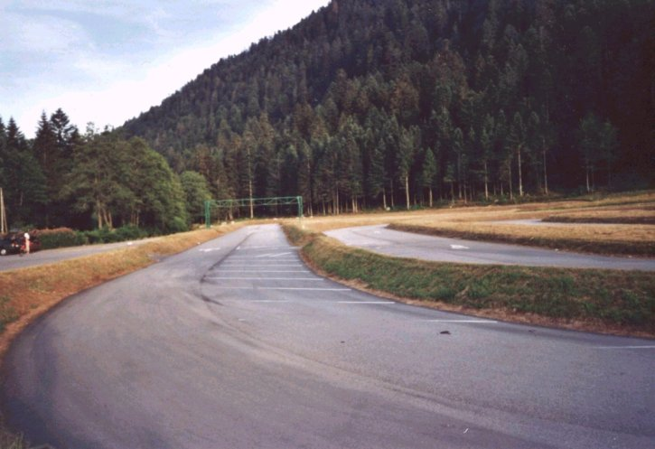
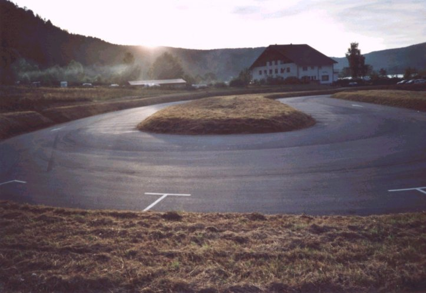
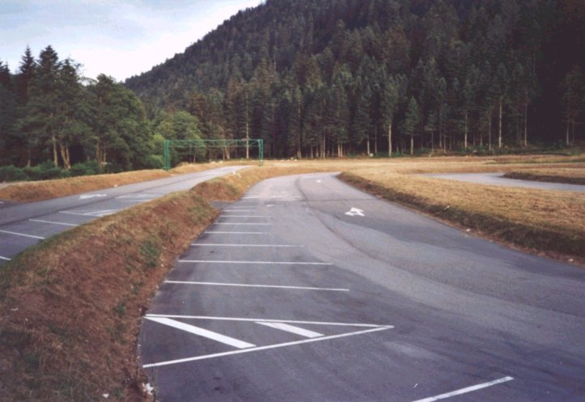
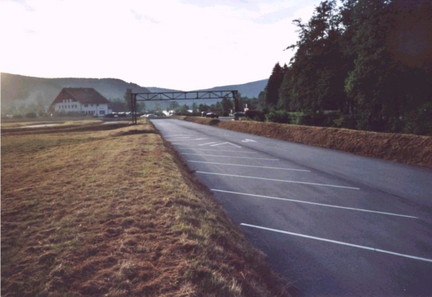

Xonrupt Longemer
Type: Ice Racing Circuit
Length: 0.385 Miles // 0.620 km
Photographs taken: 12th July, 2003
Numbers on the map indicate where the pictures were taken. Click below
to view the photograph.
| 1 | 2 | 3 | 4
| 5 | 6 | 7 |

Return to racingcircuits.net's Photo Archive Main Index

1) Looking from the Start/Finish line towards the sweeping long turn 1 and the second of
the hairpins.

2) The view towards the first of the hairpin turns, taken from the Start/Finish line.

3) Looking back down the circuit towards the final turn from the Start/Finsh line.

4) The entry to the first corner, looking back down the circuit towards the Start/Finsh
line.

5) The first of the two hairpins

6) The exit of the second hairpin. The Start/Finish straight is on the left, the exit of
the first hairpin on the right.

7) Exiting the final corner onto the Start/Finish straight.
©Roelard Smit. Reproduced here with kind permission.